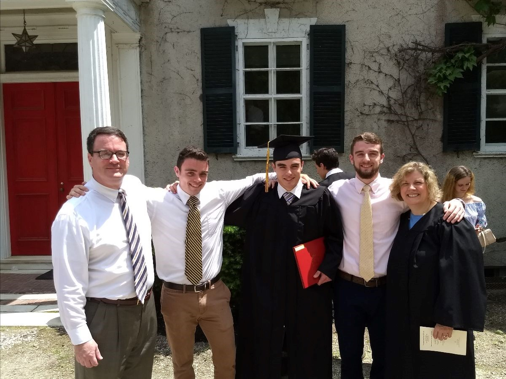

Meet Massachusetts Homeschoolers: Patrick & Kerry Sullivan
By Patrick Sullivan
We began our homeschool journey, after our twin boys, John and Kevin turned six. For about a year or two before, my wife Kerry and I had discussed the educational options available to us. We had spoken to friends who were already homeschooling and read some homeschooling books by various authors such as The Lost Tools of Learning by Dorothy Sayers.
My wife and I were both products of the public schools and so it was a bit surprising to our friends and family and perhaps to ourselves that we chose the homeschooling path. Initially, our extended family was a bit perplexed at our approach, but it was respected and was never really a problem.
We began with the let’s see how it goes this year
approach and ended up following that for nine years!
We thought that for our young boys it was important to gradually introduce them to academics while allowing them plenty of time to run around, use their imagination and play. That seemed to work well, and Kerry did a great job with the children’s schooling. I helped where I could and was grateful for the opportunity to have a hand in our school.
Our first interaction with the school administration went smoothly. They were mostly hands off which enabled us to find our way at the outset and build confidence in what we were doing.
A few years later we moved to a different town in Massachusetts and our second interaction with the new school district was a bit more challenging. They pressed for extra paperwork and conditions, but we stood our ground upon the legal precedents in Massachusetts and our right to homeschool. After that, it went smoothly with no further issues, and we continued to build on our momentum.
By then, our youngest son, Chris had also been homeschooling and Kerry did a wonderful job of designing good education plans for the boys and keeping a nice balance between academics and free time. The flexibility of homeschooling played a key role in establishing a natural learning environment which we believed was critical to the learning process.
As a family, we formed strong bonds as we went through each homeschool year and that enriched the whole journey. Fortunately, we had several great homeschooling families we could interact with and have play dates and activities with. We would meet and do science projects with them, and it was great fun.
As the children grew, we would from time to time receive positive comments in public about how well behaved and polite our boys were. I believe this was a direct result from being at home and having that kind of behavior modeled each day, which was yet another benefit to homeschooling.
When the children approached high school age, they began attending local private schools and made a good transition. They got the opportunity to be challenged in new and different ways. They also had the opportunity to play organized sports which they enjoyed.
Today, we are proud of John and Kevin who are college graduates. Currently, John is attending Seminary, and Kevin is attending Law School. And we are equally proud of Chris who is working and studying as a Plumber’s Apprentice.
Apart from the academic success and other rich experiences from our homeschool journey, Kerry and I are most proud of the kind of adults our children have become. They are not perfect by any means but have strong characters and a sense of purpose in life.
Having more time with our children through homeschooling was a precious gift we will always have and would not have had otherwise. We can look upon those days and years as time well spent.
Kerry has a BA in English and an MA in Secondary Education. She has a great love for literature and currently is an English teacher at a private school. Patrick works as an Insurance Business Analyst.